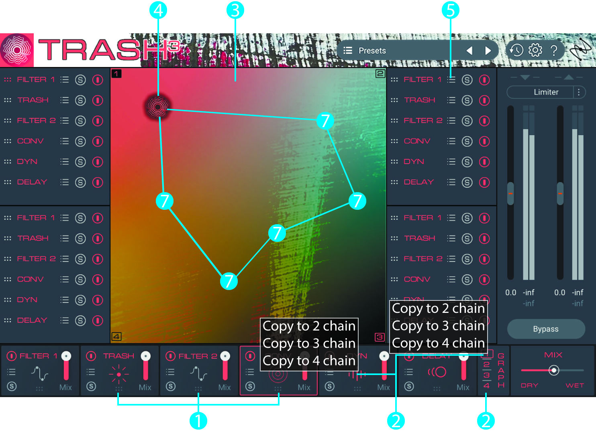
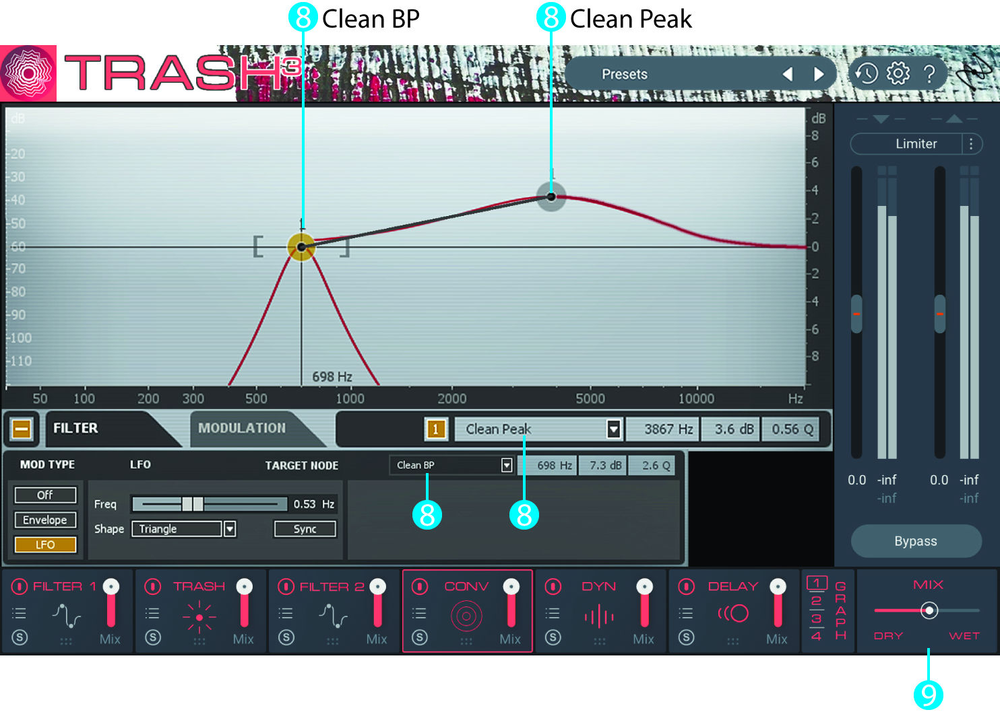
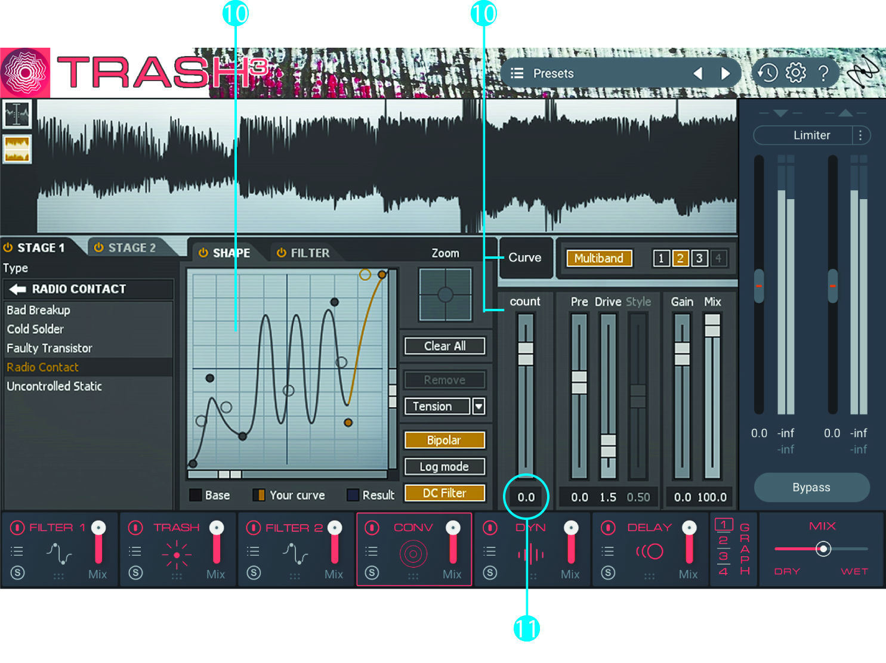

All the included images are used only to demonstrate my thoughts and ideas of possible improvement of Trash2 plug-in and below suggested interface is an alternative vision. Any mentioned products of other developers except iZotope inc. carry only roles of examples and, of course, are not for praising them over iZotope's Trash2.
30.04.2020
As a foreword...
Material for this invetive feedback was written and sent straight to Customer Care of the culprit of it about 9 months ago after purchasing their product. To be honest, I’ve purchased several of their products and have never been disappointed with their performance. Although, while using them, I found a plenty of room for improvement in several functions which encouraged me to describe them in so-called "presentation" of my ideas. So here they are...



Every Effect Module may be moved so user can re-arrange the chain of Trash. It is possible in a current version but implemented in a burdensome way due to every time of creative impulse you have to enter to "Graph" mode and change your chain. Shortening a count of actions of users, that they have to do while reaching their ethos of sound, this would facilitate speed of the workflow and strengthen visual connectivity with the process since the user wouldn't have to see pop-up window.
Trash2 is quite creative but why not enhance its creativeness four time more?! There may be 4 chains of Effects which will widen modulation possibilities. You may see "dotted" buttons in front of every Effect in each Module witch would allow to rearrange chains and hear result on the fly.
In accordance with previous point, such function as "Graph" could be extended to XY modulator to blend initial sound between 4 different combinations. Adding automation of X and Y parameters would allow users to get more controllable processing or this might be enriched by 8 steps to follow on XT Control Pad, this part is described in 7th point.
Graph indicator represents logo of Trash that would be animated and colored gradiantly (to be honest, I’m way too far from graphics so I didn’t display it clearly, just ad arbitrium). Soft glowing syncronized with volume of processed sound is either preferrable. Moreover, speaking of smoothness of the GUI, I would pay attention to a smoother buttons/knobs design that started recently to appear in such plugins like Crystalline, Spaced Out and Parallel Aggressor by Baby Audio or Murda Melodies by Slate Digital or STRIIIINGS by UJAM. The smoother the design, the more it contributes to the smoothness of experience.
It is either possible to re-arrange Effect Modules in Graph mode so the processing turns out to be easier, intentional and more creative.
Right button of mouse allows to copy & paste Effect Modules between chains (as an instanse user may copy Convolve Module of 1st Chain to 2nd Chain and replace it’s Convolve Module) same as user may copy the whole chain and then make changes in 2nd Chain basing on adjustments of the 1st one. This would allow to build fluent and controllable trasformation of sound while shifting from one Module to another on XY Pad. Plus, this is no doubt time saver feature.
Graph indicator has LFO modulation up to 8 steps, editable parameters of Modules and their Effects on every step, editable arrangement of Module chains on every step and editable speed between each step with choice to loop forward or reverse playback of all the steps. So, moving from one step to another all the parameters would gradually change. Take it as 8 Macros between wich you shift your settings.
While apllying LFO/Envelope on Filter Point, user may transform initial type of Filter into another type which provides more creative approach. Furthermore, it would be more appealing if Filter Points were colorized both dramatically and brightly, not only general Point while modulated is greyish.
Mix Module allows dry/wet all the chains and cut “wet” effect by Low Pass Filter & High Pass Filter. While writing it into a site I've noticed here another space for upgrade. In the lowest section there can be added several LFO/ADSR/RANDOM modulators that could be applied to anything including Low Pass & High Pass Filters of Mix dry/wet knob.
User may draw personal curve in Shape box of Trash Module which then automatically splits onto points.
There is also a function to control a count of divided points up to 16.
Afterword...
Without any crazy interruptions into iZotope's Trash2 it still remains to be a universal tool for transforming sound into both interesting and sometimes unpredictable outcomes.

share this page